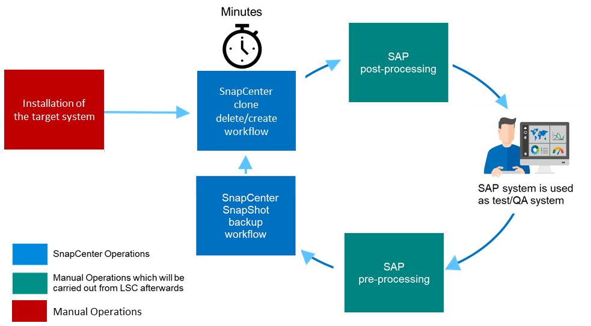
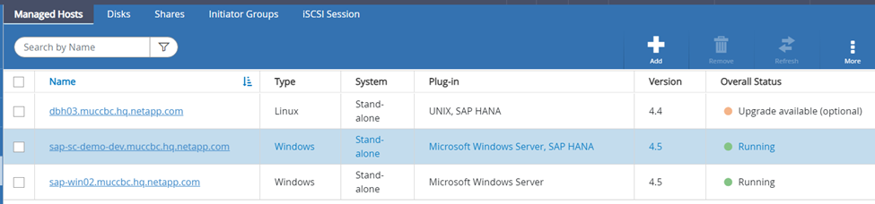
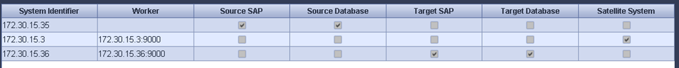
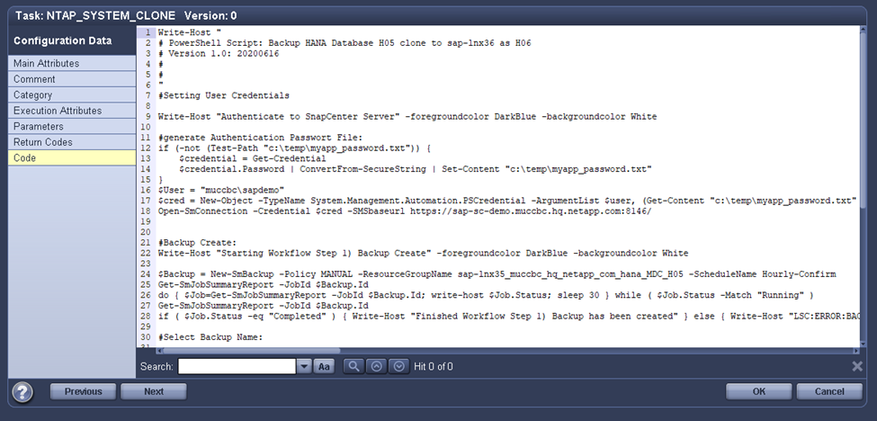

Request doc changes
Request doc changes Edit this page
Edit this page Learn how to contribute
Learn how to contributeSAP HANA system refresh with LSC and SnapCenter
Contributors
This section describes how to integrate LSC with NetApp SnapCenter. The integration between LSC and SnapCenter supports all SAP- supported databases. Nevertheless, we must differentiate between SAP AnyDBs and SAP HANA because SAP HANA provides a central communication host that is not available for SAP AnyDBs.
The default SnapCenter agent and database plug-in installation for SAP AnyDBs is a local installation from the SnapCenter agent in addition to the corresponding database plug-in for the database server.
In this section, the integration between LSC and SnapCenter is described using an SAP HANA database as an example. As previously stated for SAP HANA, there are two different options for the installation of the SnapCenter agent and SAP HANA database plug-in:
-
A standard SnapCenter agent and SAP HANA Plug-in installation. In a standard installation, the SnapCenter agent and the SAP HANA Plug-in are locally installed on the SAP HANA database server.
-
A SnapCenter installation with a central communication host. A central communication host is installed with the SnapCenter agent, the SAP HANA Plug-in, and the HANA database client that handles all database-related operations needed to back up and restore an SAP HANA database for several SAP HANA systems in the landscape. Therefore, a central communication host does not need to have a complete SAP HANA database system installed.
For more details regarding these different SnapCenter agents and SAP HANA database plug-in installation options, see the technical report TR-4614: SAP HANA backup and recovery with SnapCenter.
The following sections highlight the differences between integrating LSC with SnapCenter using either the standard installation or the central communication host. Notably, all configuration steps that are not highlighted are the same regardless of the installation option and the database used.
To perform an automated Snapshot copy-based backup from the source database and create a clone for the new target database, the described integration between LSC and SnapCenter uses the configuration options and scripts described in TR-4667: Automating SAP HANA System Copy and Clone Operations with SnapCenter.
Overview
The following figure shows a typical high-level workflow for an SAP system refresh lifecycle with SnapCenter without LSC:
-
A one-time, initial installation and preparation of the target system.
-
Manual preprocessing (exporting licenses, users, printers, and so on).
-
If necessary, the deletion of an already existing clone on the target system.
-
The cloning of an existing Snapshot copy of the source system to the target system performed by SnapCenter.
-
Manual SAP post-processing operations (importing licenses, users, printers, disabling batch jobs, and so on).
-
The system can then be used as test or QA system.
-
When a new system refresh is requested, the workflow restarts at step 2.
SAP customers know that the manual steps colored in green in the figure below are time consuming and error prone. When using LSC and SnapCenter integration, these manual steps are carried out with LSC in a reliable and repeatable manner with all necessary logs needed for internal and external audits.
The following figure provides an overview of the general SnapCenter-based SAP system refresh procedure.

Prerequisites and limitations
The following prerequisites must be fulfilled:
-
SnapCenter must be installed. The source and target system must be configured in SnapCenter, either in a standard installation or by using a central communication host. Snapshot copies can be created on the source system.
-
The storage backend must be configured properly in SnapCenter, as shown in the image below.

The next two images cover the standard installation in which the SnapCenter agent and the SAP HANA Plug-in are installed locally on each database server.
The SnapCenter agent and the appropriate database plug-in must be installed on the source database.

The SnapCenter agent and the appropriate database plug-in must be installed on the target database.
The following image portrays central communication-host deployment in which the SnapCenter agent, the SAP HANA Plug-in, and the SAP HANA database client are installed on a centralized server (such as the SnapCenter Server) to manage several SAP HANA systems in the landscape.
The SnapCenter agent, the SAP HANA database plug-in, and the HANA database client must be installed on the central communication host.

The backup for the source database must be configured properly in SnapCenter so that the Snapshot copy can be successfully created.

The LSC master and the LSC worker must be installed in the SAP environment. In this deployment, we also installed the LSC master on the SnapCenter Server and the LSC worker on the target SAP database server, which should be refreshed. More details are described in the following section “Lab setup.”
Documentation resources:
Lab setup
This section describes an example architecture that was set up in a demo data center. The setup was divided into a standard installation and an installation using a central communication host.
Standard installation
The following figure shows a standard installation in which the SnapCenter agent together with the database plug-in was installed locally on the source and the target database server. In the lab setup, we installed the SAP HANA Plug-in. In addition, the LSC worker was also installed on the target server. For simplification and to reduce the number of virtual servers, we installed the LSC master on the SnapCenter Server. The communication between the different components is illustrated in the following figure.

Central communication host
The following figure shows the setup using a central communication host. In this configuration, the SnapCenter agent together with the SAP HANA Plug-in and the HANA database client was installed on a dedicated server. In this setup, we used the SnapCenter Server to install the central communication host. In addition, the LSC worker was again installed on the target server. For simplification and to reduce the number of virtual servers, we decided to also install the LSC master on the SnapCenter Server. The communication between the different components is illustrated in the figure below.

Initial one-time preparation steps for Libelle SystemCopy
There are three main components of an LSC installation:
-
LSC master. As the name suggests, this is the master component that controls the automatic workflow of a Libelle-based system copy. In the demo environment, the LSC master was installed on the SnapCenter Server.
-
LSC worker. An LSC worker is the part of the Libelle software that typically runs on the target SAP system and executes the scripts required for the automated system copy. In the demo environment, the LSC worker was installed on the target SAP HANA application server.
-
LSC satellite. An LSC satellite is a part of the Libelle software that runs on a third-party system on which further scripts must be executed. The LSC master can also fulfill the role of an LSC satellite system at the same time.
We first defined all the involved systems inside LSC, as shown in the following image:
-
172.30.15.35. The IP address of the SAP source system and the SAP HANA source system.
-
172.30.15.3. The IP address of the LSC master and the LSC satellite system for this configuration. Because we installed the LSC master on the SnapCenter Server, the SnapCenter 4.x PowerShell Cmdlets are already available on this Windows host because they were installed during the SnapCenter Server installation. So, we decided to enable the LSC satellite role for this system and execute all SnapCenter PowerShell Cmdlets on this host. If you use a different system, make sure you install the SnapCenter PowerShell Cmdlets on this host according to the SnapCenter documentation.
-
172.30.15.36. The IP address of the SAP destination system, the SAP HANA destination system, and the LSC worker.
Instead of IP addresses, host names, or fully qualified domain names can also be used.
The following image shows the LSC configuration of the master, worker, satellite, SAP source, SAP target, source database, and target database.

For the main integration, we must again separate the configuration steps into the standard installation and the installation using a central communication host.
Standard installation
This section describes the configuration steps needed when using a standard installation where the SnapCenter agent and the necessary database plug-in are installed on the source and target systems. When using a standard installation, all tasks needed to mount the clone volume and to restore and recover the target system are carried out from the SnapCenter agent that is running on the target database system on the server itself. This allows access to all the clone-related details that are available through environmental variables from the SnapCenter agent. Therefore, you only need to create one additional task in the LSC copy phase. This task carries out the Snapshot copy process on the source database system and the clone and restore and recovery process on the target database system. All SnapCenter related tasks are triggered by using a PowerShell script that is entered in the LSC task NTAP_SYSTEM_CLONE.
The following image shows LSC task configuration in the copy phase.

The following image highlights the configuration of the NTAP_SYSTEM_CLONE process. Because you are executing a PowerShell script, this Windows PowerShell script is executed on the satellite system. In this instance, this is the SnapCenter Server with the installed LSC master that also acts as a satellite system.

Because LSC must be made aware of whether the Snapshot copy, cloning, and recovery operation has been successful, you must define at least two return code types. One code is for a successful execution of the script, and the other code is for a failed execution of the script, as shown in the following image.
-
LSC:OKmust be written from the script to standard out if the execution was successful. -
LSC:ERRORmust be written from the script to standard out if the execution has failed.

The following image shows part of the PowerShell script that must run to execute a Snapshot-based backup on the source database system and a clone on the target database system. The script is not intended to be complete. Rather, the script shows how integration between LSC and SnapCenter can look and how easy it is to set it up.

Because the script is executed on the LSC master (which is also a satellite system), the LSC master on the SnapCenter Server must be run as a Windows user that has appropriate permissions to execute backup and cloning operations in SnapCenter. To verify whether the user has appropriate permission, the user should be able execute a Snapshot copy and a clone in the SnapCenter UI.
There is no need to run the LSC master and the LSC satellite on the SnapCenter Server itself. The LSC master and the LSC satellite can run on any Windows machine. The prerequisite for running the PowerShell script on the LSC satellite is that the SnapCenter PowerShell cmdlets have been installed on the Windows Server.
Central communication host
For integration between LSC and SnapCenter using a central communication host, the only adjustments that must be made are performed in the copy phase. The Snapshot copy and the clone are created using the SnapCenter agent on the central communication host. Therefore, all details about the newly created volumes are only available on the central communication host and not on the target database server. However, these details are needed on the target database server to mount the clone volume and to carry out the recovery. This is the reason why two additional tasks are needed in the copy phase. One task is executed on the central communication host and one task is executed on the target database server. These two tasks are shown in the image below.
-
NTAP_SYSTEM_CLONE_CP. This task creates the Snapshot copy and the clone using a PowerShell script that executes the necessary SnapCenter functions on the central communication host. This task therefore runs on the LSC satellite, which in our instance is the LSC master that runs on Windows. This script collects all details about the clone and the newly created volumes and hands it over to the second task
NTAP_MNT_RECOVER_CP, which runs on the LSC worker that runs on the target database server. -
NTAP_MNT_RECOVER_CP. This task stops the target SAP system and the SAP HANA database, unmounts the old volumes, and then mounts the newly created storage clone volumes based on the parameters that were passed through from the previous task
NTAP_SYSTEM_CLONE_CP. The target SAP HANA database is then restored and recovered.

The following image highlights the configuration of the task NTAP_SYSTEM_CLONE_CP. This is the Windows PowerShell script that is executed on the satellite system. In this instance, the satellite system is the SnapCenter Server with the installed LSC master.

Because LSC must be aware of whether the Snapshot copy and cloning operation was successful, you must define at least two return code types: one return code for a successful execution of the script and the other for a failed execution of the script, as shown in the image below.
-
LSC:OKmust be written from the script to standard out if the execution was successful. -
LSC:ERRORmust be written from the script to standard out if the execution failed.

The following image shows part of the PowerShell script that must run to execute a Snapshot copy and a clone using the SnapCenter agent on the central communication host. The script is not meant to be complete. Rather, the script is used to show how integration between LSC and SnapCenter can look and how easy it is to set it up.

As previously mentioned, you must hand over the name of the clone volume to the next task NTAP_MNT_RECOVER_CP to mount the clone volume on the target server. The name of the clone volume, also known as the junction path, is stored in the variable $JunctionPath. The handover to a subsequent LSC task is achieved through a custom LSC variable.
echo $JunctionPath > $_task(current, custompath1)_$
Because the script is executed on the LSC master (which is also a satellite system), the LSC master on the SnapCenter Server must run as a Windows user that has appropriate permissions to execute the backup and cloning operations in SnapCenter. To verify whether it has the appropriate permissions, the user should be able execute a Snapshot copy and clone in the SnapCenter GUI.
The following figure highlights the configuration of the task NTAP_MNT_RECOVER_CP. Because we want to execute a Linux Shell script, this is a command script executed on the target database system.

Because LSC must be made aware of mounting the clone volumes and whether restoring and recovering the target database was successful, we must define at least two return code types. One code is for a successful execution of the script, and one is for a failed execution of the script, as is shown in the following figure.
-
LSC:OKmust be written from the script to standard out if the execution was successful. -
LSC:ERRORmust be written from the script to standard out if the execution failed.

The following figure shows part of the Linux Shell script used to stop the target database, unmount the old volume, mount the clone volume, and restore and recover the target database. In the previous task, the junction path was written into an LSC variable. The following command reads this LSC variable and stores the value in the $JunctionPath variable of the Linux Shell script.
JunctionPath=$_include($_task(NTAP_SYSTEM_CLONE_CP, custompath1)_$, 1, 1)_$
The LSC worker on the target system runs as <sidaadm>, but mount commands must be run as the root user. This is why you must create the central_plugin_host_wrapper_script.sh. The script central_plugin_host_wrapper_script.sh is called from the task NTAP_MNT_RECOVERY_CP using the sudo command. Using the sudo command, the script runs with UID 0 and we are able to carry out all subsequent steps, such as unmounting the old volumes, mounting the clone volumes, and restoring and recovering the target database. To enable script execution using sudo, the following line must be added in /etc/sudoers:
hn6adm ALL=(root) NOPASSWD:/usr/local/bin/H06/central_plugin_host_wrapper_script.sh

SAP HANA system refresh operation
Now that all necessary integration tasks between LSC and NetApp SnapCenter have been carried out, starting a fully automated SAP system refresh is a one-click task.
The following figure shows the task NTAP``SYSTEM``CLONE in a standard installation. As you can see, creating a Snapshot copy and a clone, mounting the clone volume on the target database server, and restoring and recovering the target database took approximately 14 minutes. Remarkably, with Snapshot and NetApp FlexClone technology, the duration of this task remains nearly the same, independent of the size of the source database.

The following figure shows the two tasks NTAP_SYSTEM_CLONE_CP and NTAP_MNT_RECOVERY_CP when using a central communication host. As you can see, creating a Snapshot copy, a clone, mounting the clone volume on the target database server, and restoring and recovering the target database took approximately 12 minutes. This is more or less the same time needed to carry out these steps when using a standard installation. Again, Snapshot and NetApp FlexClone technology enables the consistent, rapid completion of these tasks, independent of the size of the source database.